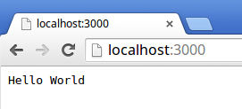
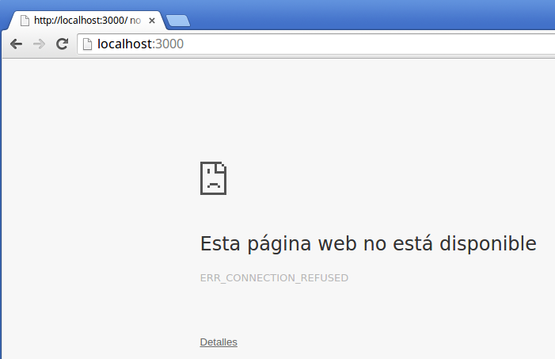

Web Development
Server Side
NodeJS
Óscar Belmonte Fernández
Universitat Jaume I
Introduction
Typically, a web application consists of two parts: the client part which is downloaded and executed in the browser; and the server part, which provides the data management through internet.
So far, we have seen how to use javascript to write the client side of our applications. Now I am showing you how to develop the server side programmed in javascript too.
Node is a mature technology to create server side applications written in javascript.
Content
What is Node.js
Node.js is a JavaScript runtime built on Chrome's V8 JavaScript engine. Node.js uses an event-driven, non-blocking I/O model that makes it lightweight and efficient. Node.js' package ecosystem, npm, is the largest ecosystem of open source libraries in the world.
As an asynchronous event driven framework, Node.js is designed to build scalable network applications.
Creating our first Node server
First, let's create a new NodeJS project using npm.
Open a terminal and type
npm init
This utility will walk you through creating a package.json file.
It only covers the most common items, and tries to guess sensible defaults.
See `npm help json` for definitive documentation on these fields
and exactly what they do.
Use `npm install <pkg> --save` afterwards to install a package and
save it as a dependency in the package.json file.
Press ^C at any time to quit.
name: (Remove)
Type in the name of your new project in lowercase.
name: (Remove) remove
version: (1.0.0)
description:
entry point: (index.js)
test command:
git repository:
keywords:
author:
license: (ISC)
In the end, you will see a summary of the new project:
About to write to /home/oscar/Oscar/Tmp/Remove/package.json:
{
"name": "remove",
"version": "1.0.0",
"description": "",
"main": "index.js",
"scripts": {
"test": "echo \"Error: no test specified\" && exit 1"
},
"author": "",
"license": "ISC"
}
Is this ok? (yes)
You can check that a new file package.json has been created.
This file contains a description of how to build your project. We'll learn more about it in the next chapter.
Create an index.js file with the following code:
const http = require('http');
const hostname = '127.0.0.1';
const port = 3000;
const server = http.createServer((req, res) => {
res.statusCode = 200;
res.setHeader('Content-Type', 'text/plain');
res.end('Hello World\n');
});
server.listen(port, hostname, () => {
console.log(`Server running at http://${hostname}:${port}/`);
});
Starting up the server
Just type the following in a terminal:
$ node index.js
Server running at http://127.0.0.1:3000/
The message on the screen tells us that the server is running.
Checking if the server is running
Just open a web browser, type http://localhost:3000, and then press enter.
Stopping the server
Just press Ctrl+C in the terminal.
The server code in detail
const http = require('http'); // http module loaded
const hostname = '127.0.0.1';
const port = 3000;
// We create the server
const server = http.createServer((req, res) => {
res.statusCode = 200; // Status code
res.setHeader('Content-Type', 'text/plain'); // Response content type
res.end('Hello World\n'); // Response body
});
// The server stasts listening
server.listen(port, hostname, () => {
console.log(`Server running at http://${hostname}:${port}/`);
});
Although you can develop your server web application directly using NodeJS, there are frameworks that help you create your applications.
ExpressJS is one such frameworks. It is intended to ease the development of web applications that adhere to the RESTful architectural style. We will see this framework in the next course chapter.
Summary
Node provides us with the basics to build a server application written in javascript.
Node school is a very useful website for learning node and other related technologies.
Exercises
- Write a server web application that shows your name when someone connects to it.
- Change the listening port of the web server application to 3030.
- Start two different web server applications on different listening ports.